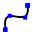

修改几何形状
在TecZone折弯中，您可以使用强大的2D简图编辑器来修改、清理或添加到几何形状。使用快捷键S进入简图模式。编辑器在展开视图中显示零件。

在展开图中，单击清理图标或按快捷键 S。将打开一个菜单，其中包含用于处理展开图的各种图标：

简图面板
| 图标 | 符号 | 含义 |
|---|---|---|
|
选择 |
选择对象、线、条目等 |
|
线 |
简图一条线 |
|
连接线 |
简图任意数量的线 |
|
平行线 |
简图线条的平行线 |
|
正常 |
简图曲线的切线 |
|
折弯线 |
简图线条的正常线 |
中心弧 |
简图折弯线 |
|
|
2 点圆弧 |
从中心点、起始点和终点简图圆弧 |
|
3 点圆弧 |
通过两个定义点（起始点和终点）简图圆弧 |
|
切线圆弧 |
简图与简图图素相切的圆弧 |
|
矩形 |
简图矩形 |
|
矩形中心 |
从中心简图矩形 |
|
圆周 |
简图圆。选择圆的中心点并拖动光标以定义半径，或输入半径值 |
|
2 点圆周 |
根据圆周简图圆。选择圆周上的一个点，然后选择第二个和第三个点。 |
|
3 点圆周 |
根据圆周简图圆。选择圆周上的一个点，然后选择第二个和第三个点。 |
|
2 切线圆周 |
简图具有两条切线的圆。输入圆直径，然后选择第一条和第二条切线。 |
|
3 切线圆周 |
简图具有三条切线的圆。输入圆直径，然后选择第一条、第二条和第三条切线。 |
|
多边形中心 - 角点 |
简图具有三条切线的圆。输入圆直径，然后选择第一条、第二条和第三条切线。 |
|
多边形中心 - 侧边中心 |
简图多边形。指定边数并选择中心点和侧边的中间 |
|
带侧边的多边形 |
简图多边形。指定边数并定义一条边的起始点和终点。 |
|
倒圆 |
在两个简图图素的角点处，使用输入的半径对角进行倒圆从而创建切向圆弧 |
|
倒角 |
在两个简图图素相交的角上创建斜角 |
|
角修整，圆形 |
使用输入的半径，对两个简图图素相交处的角进行修边 |
角修整，成角度地 |
使用矩形，对两个简图图素相交处的角进行修边。可以预先输入矩形的尺寸。 |
|
|
正方形切口 |
创建矩形任意截面。您必须输入角距离，任意截面深度，然后选择一个角。 |
|
长孔切口 |
创建长孔形状的任意截面。您必须输入角距离，任意截面宽度，任意截面深度，然后选择一个角。 |
|
三角形切口 |
创建三角形任意截面。您必须输入角距离，任意截面宽度，任意截面深度，然后选择一个角。 |
|
键孔 |
使用输入的值在圆中创建一个键孔。 |
|
3 段完整倒圆 |
将三个相连的简图图素倒圆 |
|
延长图素 |
选择要扩展的简图图素 |
|
修整图素 |
选择要修剪的简图图素 |
|
融合 |
用于将多条单独的折线修边并连接成一条 |
图素偏差 |
按指定距离，偏移一个或多个简图图素、简图的设计形式边缘，或设计形式面 |
|
|
移动 |
使用 ctrl 选择简图图素，然后选择基准点移动简图图素 |
|
旋转 |
使用 ctrl 选择简图图素，选择旋转中心点，然后选择起始点和终点，以旋转简图图素 |
|
缩放尺寸 |
使用 ctrl 选择简图图素，选择基点，然后选择起始基准点和结束基准点，用于缩放简图图素 |
|
建立镜像 |
使用 ctrl 选择简图图素，然后选择镜像线的起始点，然后选择镜像线的终点，以镜像简图图素 |
|
线性模式 |
使用直线模型创建一个或多个简图图素的参考副本以便您可以沿一条或两条线性路径等距离放置空格。点击直线模型并输入所需的值 |
|
圆周模式 |
使用圆形模型创建一个或多个简图图素的参考副本以便您可以围绕一个轴等距离放置空格。点击圆形模型并输入所需的值 |
|
组合表面 |
选择两个或多个闭合的简图图素，以将表面相互结合 |
|
切割面 |
选择两个或多个闭合的简图图素，以生成所选图素的切割区 |
|
修整表面 |
选择两个或多个闭合的简图图素，以对表面进行修边 |
|
复制切口 |
使用此模具，您可以沿边缘制作缺口的多个副本。首先，输入副本之间的间距和您想要制作的缺口的副本数量。然后，通过点击与缺口邻近的双线段，选择缺口 |
|
删除切口 |
使用此模具，您可以删除角处或沿线段的缺口。点击与缺口邻近的双线段缺口被移除 |
|
建立切口镜像 |
使用此模具，您可以镜像角处或沿线段的缺口。点击与缺口邻近的双线段缺口被镜像 |
 |
连曲线 |
要开始一条新样条曲线，请点击起始点，当您点击随后的点时，将创建样条曲线。如果您想关闭样条曲线，按 ALT 键，然后点击 |
|
配置文件 |
输入底架长度、法兰高度、厚度、法兰角度、内径并按回车，以创建型面 |
|
文本 |
用于绘制将由激光加工机床标记在零件上的文本。点击此模具按钮时，输入栏将显示文本、尺寸和旋转角的输入框 |
|
文本 |
用于采用任何 TrueType 字体中的字符形状将它们转换为折线。然后可以将激光加工应用于这些折线，并且可以切割它们。第一次点击此按钮后，会出现“字体”对话框，您可选择用于文本的字体 |
|
标准形状 |
用于创建多个常见的形状并将它们插入到图纸。点击此按钮时，将出现“创建形状”对话框，您可从列出的常见形状的库中进行选择 |
|
简单的尺寸标注 |
选择第一个尺寸标注点，然后选择第二个尺寸标注点并定位尺寸标注线 |
|
基线尺寸标注 |
选择第一个尺寸标注点，然后选择第二个尺寸标注点并定位尺寸标注线 |
|
尺寸链 |
选择第一个尺寸标注点，然后选择第二个尺寸标注点，定位尺寸标注线并选择下一个尺寸标注点 |
|
水平坐标尺寸 |
坐标尺寸是从图纸中的坐标零点开始测量的一组尺寸。选择基准点并定位尺寸标注 |
|
垂直坐标尺寸 |
坐标尺寸是从图纸中的坐标零点开始测量的一组尺寸。选择基准点并定位尺寸标注 |
角度尺寸标注 |
创建角度尺寸标注。选择要标注角度尺寸的第一条线，然后选择第二条线 |
|
|
半径尺寸标注 |
创建半径尺寸标注。选择您想要标注半径尺寸的圆。用 ctrl 标注直径尺寸 |
|
用实心引线标注半径尺寸 |
用连续引线创建半径尺寸标注。选择您想要标注半径尺寸的圆。用 ctrl 标注直径尺寸 |
|
标注 |
用于以标注的形式向图纸添加提示。要创建标注，输入要显示的文本，点击以指示箭头应指向的位置，然后再次点击以指示文本应放置的位置。 |
|
分段尺寸标注 |
用于添加直线和曲线段的尺寸标注。点击要标注尺寸的段，然后再次点击以定位尺寸。或者按住 并点击段以自动定位尺寸。 |